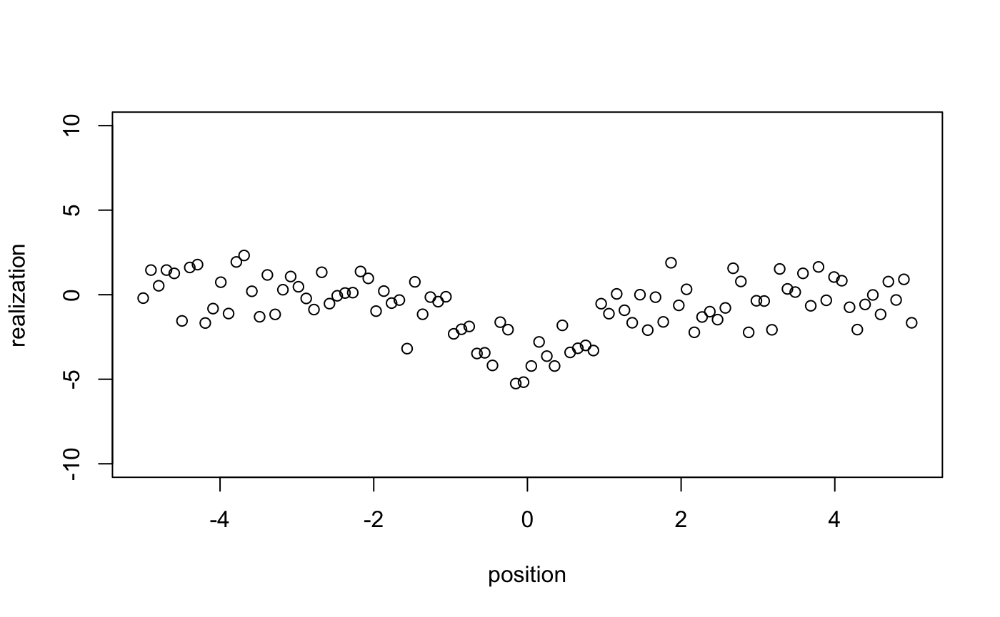
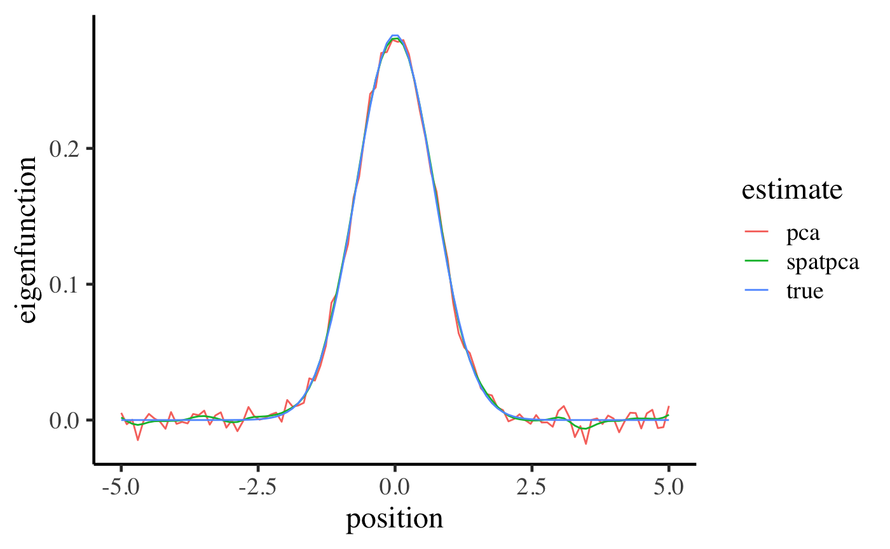
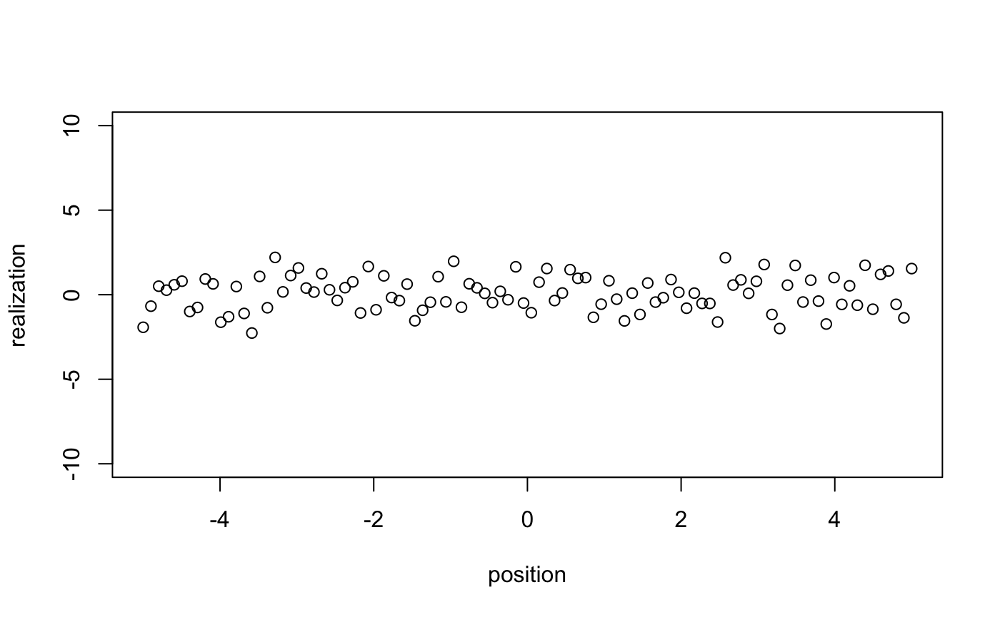
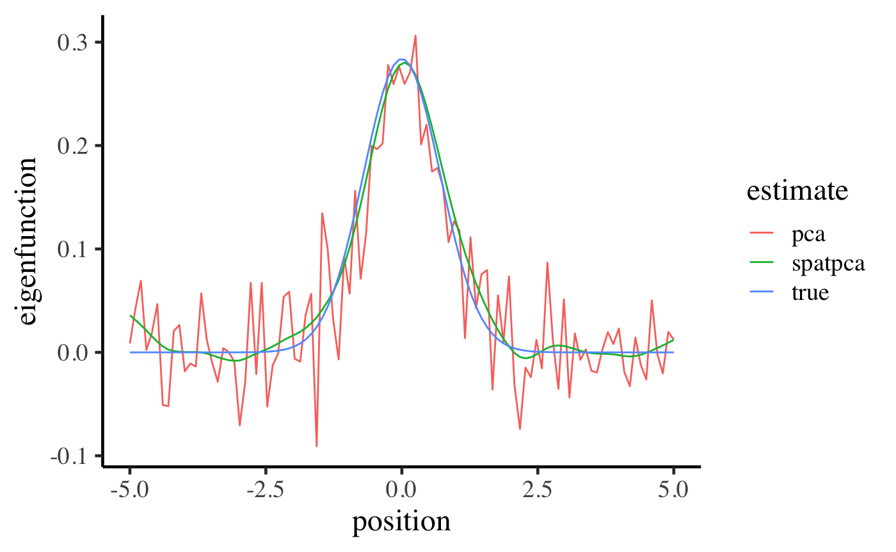

Demo: Capture the Dominant Spatial Patten with One-Dimension Location
Source:vignettes/demo.Rmd
demo.RmdObjective
- Demonstrate how SpatPCA captures the most dominant spatial pattern of variation based on different signal-to-noise ratios.
- Represent how to use SpatPCA for one-dimensional data
Basic settings
True spatial pattern (eigenfunction)
- The underlying spatial pattern below indicates realizations will vary dramatically at the center and almost unchange at the both ends of the curve.
set.seed(1024)
position <- matrix(seq(-5, 5, length = 100))
true_eigen_fn <- exp(-position^2) / norm(exp(-position^2), "F")
data.frame(position = position,
eigenfunction = true_eigen_fn) %>%
ggplot(aes(position, eigenfunction)) +
geom_line() +
base_theme
Case I: Higher signal of the true eigenfunction
Generate realizations
- We want to generate 100 random sample based on
- The spatial signal for the true spatial pattern is distributed normally with \(\sigma=20\)
- The noise follows the standard normal distribution.
Animate realizations
- We can see simulated central realizations change in a wide range more frequently than the others.
for (i in 1:100) {
plot(x = position, y = realizations[i, ], ylim = c(-10, 10), ylab = "realization")
}
Compare SpatPCA with PCA
- Note:
- Two estimates are similar to the true eigenfunctions
- SpatPCA can perform better at the both ends.
data.frame(position = position,
true = true_eigen_fn,
spatpca = eigen_est[, 1],
pca = svd(realizations)$v[, 1]) %>%
gather(estimate, eigenfunction, -position) %>%
ggplot(aes(x = position, y = eigenfunction, color = estimate)) +
geom_line() +
base_theme
Case II: Lower signal of the true eigenfunction
Animate realizations
- It is hard to see crystal clear spatial pattern via simluated sample.
for (i in 1:100) {
plot(x = position, y = realizations[i, ], ylim = c(-10, 10), ylab = "realization")
}
Compare resultant patterns
- Note:
- SpatPCA outperforms to PCA visually when signal-to-noise ratio is quite lower.
cv <- spatpca(x = position, Y = realizations)
eigen_est <- cv$eigenfn
data.frame(position = position,
true = true_eigen_fn,
spatpca = eigen_est[, 1],
pca = svd(realizations)$v[, 1]) %>%
gather(estimate, eigenfunction, -position) %>%
ggplot(aes(x = position, y = eigenfunction, color = estimate)) +
geom_line() +
base_theme